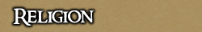
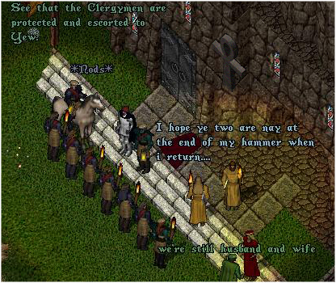

<TABLE BORDER CELLPADDING="0" background="bocimages/scrollbgdark.gif" width="100%">
	<TR>
	<!-- Header or whatever -->
	<BR>
		<TD valign="top" class="notes">
		Following the departure of the Baron, and
	      that of the iron fisted Templar Sir Hugo, Covians rose in uproar against
	      the corrupt and oppressive Church; sending it quickly on its way to the last
	      branch of the Avatarian faith, Stonekeep.
	      <DIV align="center">
		<br>
		<BR>
		<I><SMALL>The Church, sent on its way.</SMALL></I>
	      </DIV>
	      <P>
	      In this new age of Cove, Religion was nay longer a following. Supposedly
	      greater insight had been given to that of Knowledge, and of Truth. In such
	      days, the way of the Virtues and the path of Principle guided Covians in
	      their every day lives.<BR>
	      <BR>
	      <B>Times have changed, once more..</B><BR>
	      <BR>
	      Now the Church returns, darker and more sinister than ever before. It forms
	      a menacing grasp of power over the Covian people, and beyond. The Baronship
	      of Cove is, once again, an Avatarian community.<br><br>
The Baronship of Cove follows the Avatari religion under guidance of a local 
Templi Order chapter that has established a Preceptory, governed by Father Siegfried.<br><br>

The Templi are zealous warriors who have successfully, with the help of 
the Clergy, restored the faith amongst Cove's soldiery and citizenry, 
supposedly freeing them from the oppression of heretics and wytches.<br><br>

If you are seeking to visit Cove, it is highly recommended you 
<a href="Church_Handbook.pdf" target="_blank">brush up 
on the Avatari</a>.<br><br>

<i>OOC: Individuals who have Church characters, and those interested in joining 
the Church must know this document from cover-to-cover.</i>
		</TD>
	</TR>
</TABLE>
